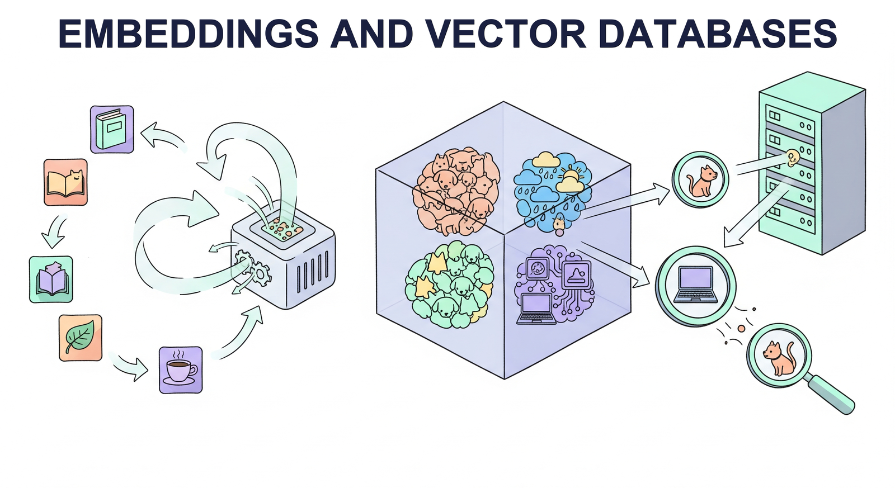

Retrieval-augmented generation (RAG) has become the dominant pattern for grounding LLM outputs in factual, up-to-date information. At the foundation of every RAG system lies a trio of interconnected technologies: embedding models that convert text into dense vector representations, vector databases that store and index those vectors for efficient search, and document processing pipelines that prepare raw content for ingestion.
This module provides a comprehensive, bottom-up treatment of these foundational components. It begins with the theory and practice of text embedding models, covering the evolution from word-level embeddings to modern sentence transformers and the training objectives that produce high-quality representations. It then examines the data structures and algorithms that make approximate nearest neighbor search practical at scale, including HNSW graphs, inverted file indexes, and product quantization (techniques that parallel the optimization strategies used in LLM inference).
The module proceeds to survey the rapidly growing ecosystem of vector database systems, comparing purpose-built solutions like Pinecone, Weaviate, and Qdrant with library-based approaches such as FAISS and embedded databases like ChromaDB. Finally, it addresses the critical (and often overlooked) challenge of document processing and chunking, where poor design decisions can undermine even the most sophisticated retrieval infrastructure.
By the end of this module, you will be able to select and fine-tune embedding models for specific domains, design vector indexes that balance recall with latency, deploy and operate vector database systems in production applications, and build document processing pipelines that maximize retrieval quality.
Who: Amara, an NLP engineer at a mid-size law firm specializing in contract review.
Situation: Attorneys needed to find all clauses related to "indemnification" across 40,000 contracts, but many clauses used synonyms like "hold harmless," "defend and compensate," or "make whole."
Problem: Keyword search with boolean operators returned fewer than 35% of relevant clauses, causing attorneys to miss critical obligations during due diligence.
Dilemma: Building an exhaustive synonym list would require months of manual curation and would still miss novel phrasings. The team needed a solution that understood meaning, not just matching strings.
Decision: Amara embedded every clause using a Sentence-BERT model fine-tuned on legal text and stored the 2.1 million clause vectors in Qdrant.
How: She seeded the system with five example indemnification clauses, then used cosine similarity search with a 0.78 threshold to retrieve semantically similar clauses regardless of wording.
Result: Recall jumped from 35% to 91%, and attorneys found the system surfaced clauses they had never thought to search for. Due diligence time dropped by 40%.
Lesson: Embeddings capture meaning rather than surface form. When your domain has rich paraphrasing and specialized vocabulary, semantic search dramatically outperforms keyword matching. This principle underpins the retrieval stage of RAG pipelines.
Who: Dev, a data engineer at a telehealth platform building a clinical knowledge base from 12,000 medical guidelines.
Situation: The team split every PDF into fixed 512-token chunks, embedded them, and stored them in Pinecone.
Problem: Retrieval quality was abysmal. Chunks frequently split a drug interaction table across two vectors, broke numbered dosage instructions mid-sentence, or orphaned a heading from its paragraph.
Dilemma: Smaller chunks improved precision for short factoid queries but destroyed context for complex clinical questions. Larger chunks helped context but diluted relevance scores.
Decision: Dev switched to structure-aware chunking that respected section headers, tables, and list boundaries, then added parent-child retrieval so the system could fetch a focused child chunk and optionally expand to its parent section.
How: Using Docling for parsing and a custom recursive splitter that treated section boundaries and table rows as hard breaks, the team re-indexed all 12,000 documents in under six hours on a single GPU node.
Result: Answer accuracy on the internal eval suite rose from 58% to 83%. Table-based queries, which previously failed entirely, now succeeded 76% of the time.
Lesson: Chunking is not a preprocessing afterthought; it is a first-class design decision. Respecting the structure of your documents often matters more than tuning the embedding model.
If the word "vector" makes you picture arrows on a chalkboard from high school physics, you are closer to the truth than you might think. Embedding models are essentially saying: "This sentence points in a direction in 768-dimensional space, and that other sentence points in almost the same direction, so they probably mean similar things." It is geometry class all over again, just with several hundred more dimensions and considerably fewer protractors.
Who: Kenji, a platform engineer at an e-commerce company with 8 million product listings.
Situation: The recommendation team had a working prototype using ChromaDB on a single laptop, embedding product descriptions and serving "similar items" queries at about 200 queries per minute.
Problem: When the feature launched to 10% of users, query volume jumped to 15,000 per minute. ChromaDB, running in-process with no replication, buckled under the load and added 4 seconds of latency to every product page. This is exactly the kind of inference optimization challenge that arises at scale.
Dilemma: Migrate to a managed cloud service (Pinecone) for fast time-to-market but accept higher monthly costs and vendor dependency, or deploy Milvus on Kubernetes for control but absorb weeks of infrastructure work.
Decision: Kenji chose Qdrant deployed on their existing Kubernetes cluster, because its Rust-based engine offered high throughput with modest resource requirements and its API was similar enough to ChromaDB to minimize code changes.
How: The migration involved re-exporting embeddings from ChromaDB, loading them into a three-node Qdrant cluster with HNSW indexing and scalar quantization, and updating the client library calls (about 60 lines of code).
Result: P99 latency dropped from 4 seconds to 38 milliseconds at full production traffic. Monthly infrastructure cost was $1,200, compared to an estimated $3,800 for the equivalent Pinecone tier.
Lesson: Prototype-friendly tools like ChromaDB are excellent for experimentation, but production workloads demand purpose-built infrastructure. Plan your migration path before your prototype reaches real users.
Who: Fatima, a machine learning engineer at a SaaS company with 15,000 support articles.
Situation: The support chatbot used pure dense vector search to retrieve relevant articles when customers asked questions.
Problem: Customers often included exact error codes (like "ERR_4012_TIMEOUT") or product SKU numbers in their queries. Dense embeddings treated these as opaque tokens and frequently retrieved articles about similar but wrong error codes.
Dilemma: Switching back to keyword search would fix exact-match queries but lose the semantic understanding that handled natural language questions well.
Decision: Fatima implemented hybrid search: dense vector retrieval combined with BM25 sparse matching, fused using Reciprocal Rank Fusion (RRF) with k=60.
How: She added a BM25 index alongside the existing Weaviate vector index, ran both searches in parallel for every query, then merged the ranked lists using RRF before returning the top five results.
Result: Exact-match accuracy for error codes went from 41% to 97%, while semantic query quality remained unchanged. Overall customer satisfaction with the chatbot rose by 22 points.
Lesson: Dense and sparse retrieval have complementary strengths. Hybrid search with rank fusion gives you the best of both worlds: semantic understanding for natural language and precise matching for codes, names, and identifiers.
Approximate nearest neighbor algorithms have a wonderfully honest name. They are basically saying: "I cannot promise I will find the actual closest vector, but I will find something really close, really fast." It is the computational equivalent of a librarian who may not hand you the single best book on your topic but will reliably point you to the right shelf in under a millisecond.
In the next section, Section 18.1: Text Embedding Models & Training, we examine text embedding models and training techniques, understanding how to create high-quality vector representations.
Reimers, N. & Gurevych, I. (2019). "Sentence-BERT: Sentence Embeddings using Siamese BERT-Networks." arxiv.org/abs/1908.10084
Introduces Sentence-BERT, adapting BERT for efficient sentence-level embeddings using siamese and triplet networks with contrastive learning.
Malkov, Y.A. & Yashunin, D.A. (2018). "Efficient and Robust Approximate Nearest Neighbor Using Hierarchical Navigable Small World Graphs." arxiv.org/abs/1603.09320
The HNSW paper, presenting the graph-based index structure that powers most modern vector databases for fast approximate nearest neighbor search.
Khattab, O. & Zaharia, M. (2020). "ColBERT: Efficient and Effective Passage Search via Contextualized Late Interaction over BERT." arxiv.org/abs/2004.12832
Proposes late interaction for retrieval, computing token-level embeddings and using MaxSim for scoring, achieving high recall with efficient indexing.
Wang, L., Yang, N., Huang, X., et al. (2022). "Text Embeddings by Weakly-Supervised Contrastive Pre-training." (E5) arxiv.org/abs/2212.03533
Introduces the E5 embedding model family, trained with a consistent "query: " and "passage: " prefix format that became a standard for retrieval embeddings.
Kusupati, A., Bhatt, G., Rege, A., et al. (2022). "Matryoshka Representation Learning." arxiv.org/abs/2205.13147
Proposes training embeddings that are useful at multiple dimensionalities, enabling flexible storage and search tradeoffs without retraining.
Robertson, S.E. & Zaragoza, H. (2009). "The Probabilistic Relevance Framework: BM25 and Beyond." dl.acm.org
Definitive overview of BM25 sparse retrieval, the dominant keyword-based ranking function used alongside dense embeddings in hybrid search systems.
Muennighoff, N., Tazi, N., Magne, L., & Reimers, N. (2023). "MTEB: Massive Text Embedding Benchmark." arxiv.org/abs/2210.07316
Establishes the standard benchmark for evaluating text embedding models across classification, clustering, retrieval, and semantic similarity tasks.
Jegou, H., Douze, M., & Schmid, C. (2011). "Product Quantization for Nearest Neighbor Search." ieeexplore.ieee.org
Foundational paper on product quantization, the compression technique that enables billion-scale vector search with limited memory.
FAISS (Facebook AI Similarity Search). github.com/facebookresearch/faiss
Meta's high-performance library for dense vector similarity search, supporting IVF, HNSW, PQ, and composite indexes for billion-scale datasets.
Qdrant. github.com/qdrant/qdrant
Rust-based vector database with HNSW indexing, metadata filtering, and hybrid search, designed for production workloads with low latency requirements.
ChromaDB. github.com/chroma-core/chroma
Lightweight, developer-friendly embedding database for prototyping and small-scale applications, with a simple Python API and in-process operation.
Sentence-Transformers Library. github.com/UKPLab/sentence-transformers
The standard Python library for computing sentence and text embeddings, providing pretrained models and training utilities for fine-tuning embedding models.
Docling (IBM). github.com/DS4SD/docling
Document parsing library that extracts structured content from PDFs, DOCX, and HTML while preserving tables, headers, and layout information for chunking.